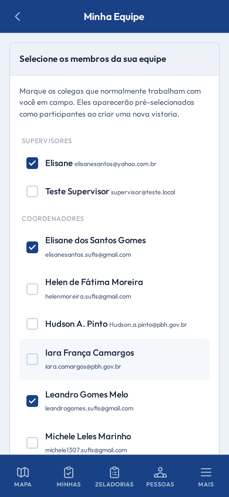
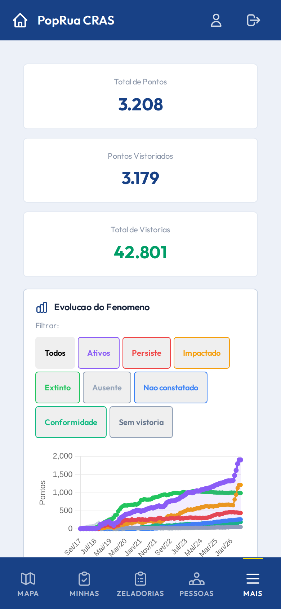

login
Tela de login
/login

mapa
Mapa de campo
/mapa

vistorias
Listagem de zeladorias
/vistorias

minhas vistorias
Minhas zeladorias
/minhas-vistorias

nova zeladoria
Nova zeladoria (formulário)
/vistorias/create?lat=-19.9135&lng=-43.9514

moradores
Listagem de moradores
/moradores

pontos
Listagem de pontos
/pontos

minha equipe
Minha equipe
/minha-equipe

dashboard
Dashboard de gestão
/dashboard

detalhe zeladoria
Detalhe da zeladoria
(primeira da listagem)